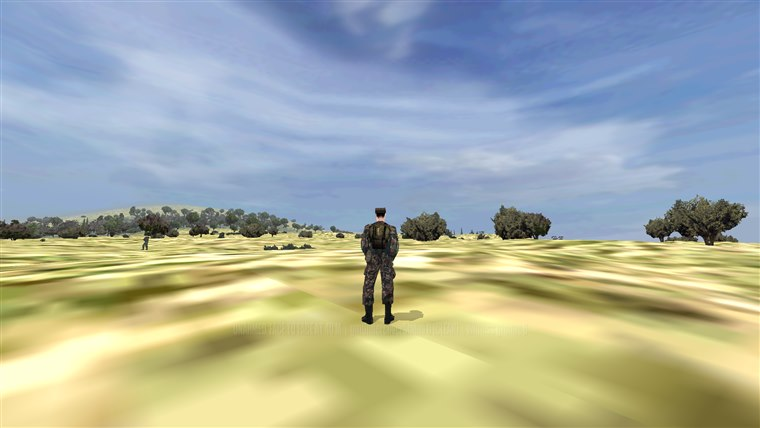

The Deep Undercover System Built
In Guerrilla Mode you are one fighter hiding inside a civilian population, and the occupier's soldiers
have to pick you out of it by looking at you. There is no global "wanted" flag. Each enemy squad runs
its own perception of you every couple of seconds, deep in the engine's AI targeting code, off three things:
what you're carrying, how you're carrying it, and what that particular squad has seen you do before.
Every capture on this page is a real, unstaged reading from the engine: the scene is set up, the AI looks,
and the status line in the frame is the system's live verdict at the moment of the screenshot.
★ The Three Rules
| What the soldier sees | What he concludes |
|---|
| Rifle in your hands | You are a combatant. Identification builds through the engine's real perception model (distance, light, fog, optics), so it takes a beat at range and is instant up close. Passing through the SUSPECT stage first, patrols investigate before they shoot. |
| Rifle slung on your back | From the front, your body hides it: you pass. But if he sees your back, or gets within about 20 metres (conversational range, where nothing stays hidden), the slung weapon gives you away. |
| No weapon at all | You are a civilian, unless this squad has previously identified you as a fighter. Squads that made you remember you. Squads that never saw anything treat you like anyone else. |
Field Captures: Every State, Live
Shot on Malden against a Soviet sentry, with the engine's status readout burned into each frame.
Same fighter, same rifle, same sentry: the only thing changing is what the sentry can see.

LIVE CAPTURE1. Unarmed, face to face, 40 m – CLEAN.
The sentry has watched this man for a while and confidently identified him... as a civilian. You can stand in
the open, in plain sight of the garrison, carrying nothing.

2. Rifle slung, seen from the FRONT – CLEAN.
The AK is on his back and the sentry is looking at his chest. The torso hides the weapon; he still reads as a civilian.
|

3. Same rifle, BACK turned – SPOTTED.
He turns around. Now the slung rifle is in the sentry's view and the verdict flips. Walking away from a checkpoint is the dangerous direction.
|

LIVE CAPTURE4. What the sentry actually sees.
The same moment from his side of the field: a man 40 metres out with a long gun across his back. This
is the observation the engine is scoring: his distance, his light, his angle on you.

LIVE CAPTURE5. Slung rifle at 15 m – EXPOSED.
Inside roughly 20 metres nothing stays hidden: at conversational range the sentry notices the rifle no matter
which way you're facing. Note him at left: he's already gone prone and levelled his weapon. Keeping your
distance is a real gameplay decision now.

LIVE CAPTURE6. Rifle in hands – EXPOSED.
A man holding a weapon is a combatant, full stop. This squad now remembers him as a fighter: stowing
the rifle again won't fool them, only squads that never saw it.
Witnesses & Memory
Exposure is recorded per squad, on the same engine records the AI uses for every other enemy it
knows about, and it survives saves. That gives cover its own lifecycle:
| Situation | What happens |
|---|
| A squad merely suspects you | Suspicion rides the engine's target-memory and fades in a few minutes if you break contact and act normal. |
| A squad has identified you | That squad remembers you as a fighter permanently. Stow the weapon, come back an hour later: they still know your face. |
| You eliminate the witnesses | Knowledge does not teleport. If the only squad that made you dies, the knowledge dies with it, and the rest of the island still takes you for a civilian. |
| You open fire | The shot marks you to every squad that currently has eyes on you, spikes the local alert level, and raises the region's heat. Firing from true concealment is different: soldiers hear a contact but can't identify the shooter. |
Vehicle Policy
The same per-observer logic extends to what you drive. Observers perceive the vehicle, not the
people inside it, and that's exactly what the system models:

7. Civilian car, rifle aboard – CLEAN.
A civilian car is anonymous. Your rifle rides hidden inside it, past soldiers who would spot it on your back.
|

8. Stolen army jeep at 14 m – EXPOSED.
At range a stolen military vehicle IS the disguise: it reads as friendly army. At checkpoint distance the
sentry looks at the driver, and the game is up. (The ditched civilian car from shot 7 is still sitting
where he left it, background right.)
|
| Behind the wheel | How it reads |
|---|
| Civilian car | Anonymous, everywhere, to everyone – unless a squad watched you climb into it while blown. Then that car is marked to those witnesses and they will engage it. Every other squad still waves it through. |
| Stolen military vehicle | Reads as friendly at range. A squad that gets a good long look grows suspicious (wrong convoy, wrong behaviour) and investigates. Inside ~20 metres they identify the driver: checkpoints are where stolen trucks die. |
| The getaway | Blow your cover on foot, jump in a car in front of the squad chasing you, and they engage the car. Shake them, ditch it, and you're a civilian again to everyone who wasn't there. |
Why It Has Depth
Because it runs on the AI's own perception machinery rather than a script flag, the tactics write
themselves: approach checkpoints face-on and never let them behind you; keep 20+ metres from every
patrol; stash the rifle before entering town, or drive it in; when things go wrong, count who actually
saw it happen, because that list, not a global alarm, is your problem to solve. A firefight in the hills
compromises you to two squads. Whether it compromises you to the island is up to what you do next.
VERIFIED
This system is built, engine-deep, and machine-verified: 474 unit assertions on
the perception rules plus in-game integration tests that stage exactly the scenes above and assert the
verdicts you can read in the captures. What it hasn't had yet is the human feel pass; tuning numbers
(the 20 m radius, identification speed, suspicion pressure) will move once it's been played hard.
« Back: Gameplay Systems | » Under the Hood
|